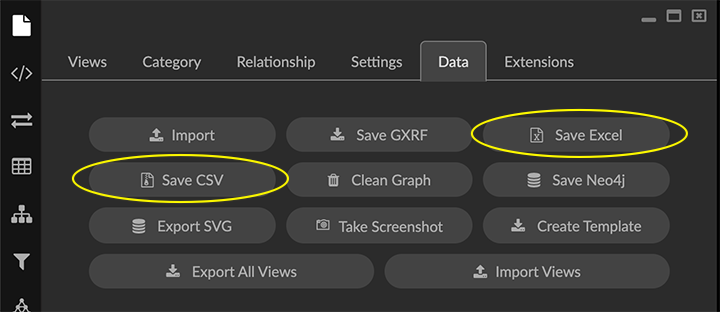
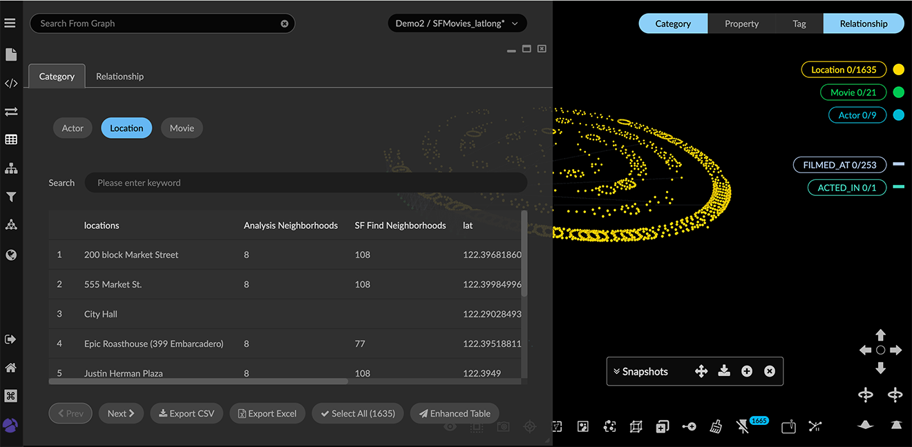
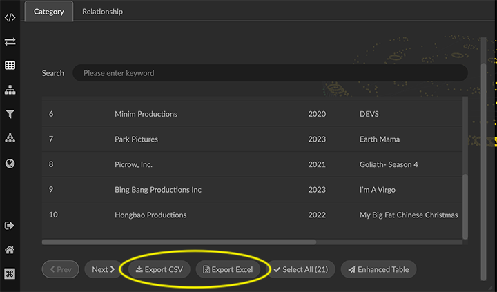
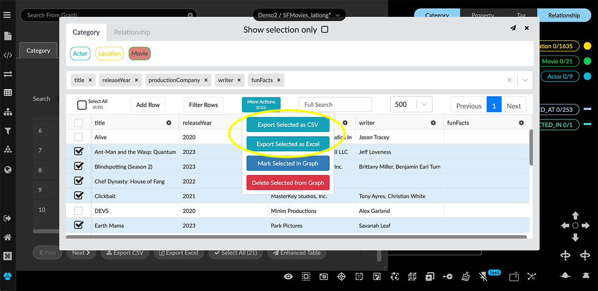

Export Data as a CSV or Excel workbook You can export: All the graph data in the project space as a CSV archive of flat files or Excel workbook. All or some of the data in a table as a CSV or Excel file. Export all data as CSV or Excel Exporting a CSV or Excel archive results in a collection of flat files, one for each category and relationship. A category file includes node IDs, properties and their values. A relationship file includes the node source and target IDs, and any edge properties and their values. The exported archive or workbook receives a default name of ProjectName, ViewName (if any) plus an appropriate extension: A CSV archive has a .zip extension: ProjectName_ViewName.zip An Excel workbook has an .xlsx extension: ProjectName_ViewName.xlsx To save a CSV archive or Excel workbook: Click the Project panel and the Data tab. Click either Save CSV or Save Excel.  The file name appears in the Downloads tab of your Chrome browser window. Export data from a table For any single category or relationship, you can export some or all of data that’s visible in the project space as a table of nodes or edges and their property values. You can: Select data in the project space and export the results from a basic table. From a basic table, open an Enhanced Table to further select or edit the data before you export it. The exported file receives a default name based on the category or relationship label: Label(YYYY-MM-DD).xlsx or .csv For example, Location(2023-05-02).CSV contains a table of Location nodes exported on 2023-05-02. To export data from a basic or enhanced table* Select data in the project space using any method. Open the Table panel. The Category tab opens by default, and shows all the categories present in the currently selection (or all visible data if no selection has been made).  Select a table to export. You can: Click a category bubble to display its table. Open the Relationship tab and click a relationship bubble. Scroll to the bottom of the panel and click Export CSV or Export Excel to export the table of visible and selected data.  To edit and select from the table before export, click Enhanced Table. In the enhanced table, you can rearrange or hide columns, search for specific values, rename categories or relationships, and more. Click the checkbox at the far left to select the table rows you want to export.  Then from More Actions, select either Export Selected as CSV or Export Selected as Excel.